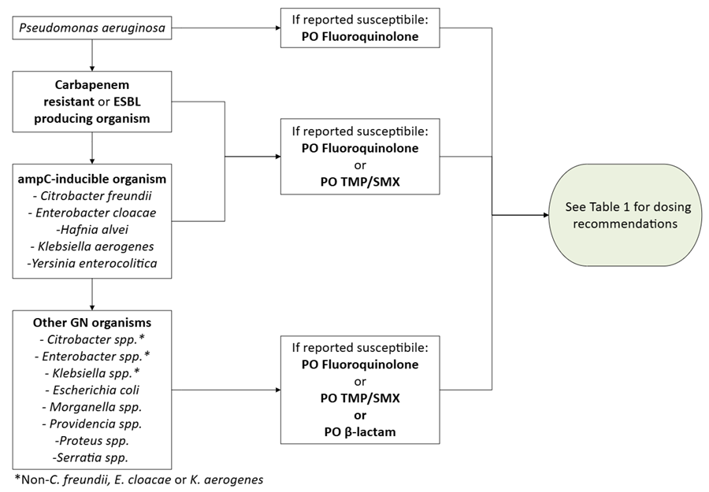

Guideline
Gram-negative Bloodstream Infection
Disclaimer: Practice guidelines are intended to assist with clinical decision-making for common situations but cannot replace evaluation and management decisions based on individual patient factors. All patients should be carefully evaluated and treated for suspected focal infection if identified. Consult Infectious Diseases (ID) or Adult Antimicrobial Stewardship Program (ASP) if you have clinical questions or questions about antibiotic selection. Additionally, the information below reflects the best available data at the time the guideline was prepared. The results of future studies may prompt revisions to this guideline.
Part 1: Inclusion and Exclusion Criteria
Inclusion Criteria | Exclusion Criteria |
Must meet ALL of the following: Received ≥ 48 hours of microbiologically active IV therapy Clinically stable ≥ 48 hours, i.e., no vasopressor requirement and normothermic without antipyretic medications Able to tolerate and absorb oral medications |
|
Part 2: PO Antibiotic Options by Organism
For more information on GN resistance mechanisms, see Part 4: Resistance.

Table 1: PO Antibiotic Dosing Recommendations
Antibiotic | Recommended Dose (for normal renal function) |
Fluoroquinolone | |
Ciprofloxacin | 750 mg PO twice daily |
Levofloxacin | 750 mg PO daily |
TMP/SMX | |
Trimethoprim/Sulfamethoxazole | 2 DS tablets PO twice daily* |
β-lactams | |
Amoxicillin
| 1,000 mg PO three times daily |
Amoxicillin/Clavulanate
| 875/125 mg PO three times daily |
Cephalexin
| 1,000 mg PO four times daily |
*Target 8 - 10 mg TMP/kg/day. May require dose adjustment for BW < 40 kg or > 85 kg. Contact ID/ASP pharmacy to assist if needed.
Part 3: Duration of Therapy
For most patients meeting inclusion criteria above, we recommend a 7 day duration therapy (DOT), where day 1 of therapy is counted from the first day of microbiologically active therapy. Repeat blood cultures are not needed to confirm clearance of uncomplicated GN BSI. If unsure or the patient scenario falls outside of these guidelines, please reach out to ID or ASP for guidance.
Immunocompromised Patients:
Among immunocompromised patients, clinical judgement should always be exercised. A 7 day duration of therapy may be reasonable EXCEPT for the following populations:
- Solid organ transplant recipients within 1 year from transplant or augmented immunosuppression
- Stem cell transplant recipients or hematologic malignancy with severe neutropenia (ANC < 500 cells/mL)
For other populations, literature is limited but growing (see Appendix A, below). Clinicians should continue to align practice with established society guidelines for specific syndromes (e.g. renal allograft pyelonephritis).
Part 4: Resistance
Always confirm reported susceptibility before selecting a PO antibiotic option. Not all gram-negative organisms will have a susceptible PO options available.
Carbapenem resistant organisms: resistant to at least one carbapenem antibiotic (i.e., ertapenem, meropenem, or imipenem-cilastatin). This may be due to carbapenemase enzyme production or other resistance mechanisms. Gene testing is reported for carbapenemase genes in the comments section of culture results. Carbapenem resistant organisms often have resistance to non β-lactam antibiotics (e.g., fluoroquinolones, TMP/SMX). Do not use oral beta-lactam antibiotics for carbapenem resistant organisms.
Extended spectrum β-lactamase (ESBL): enzymes that confer resistance to most β-lactam antibiotics, including penicillins, cephalosporins, and aztreonam. ESBL producing organisms generally remain susceptible to carbapenems. While ESBL enzymes do not inactivate non-β-lactam antibiotics, they may carry other genes that can confer resistance to non β-lactam antibiotics, but non-beta lactams can be used if they test susceptible. Do not use oral beta-lactam antibiotics for ESBL producing organisms.
Amp-C inducible organisms: include Enterobacter cloacae, Klebsiella aerogenes, and Citrobacter freundii, as well as the more rarely seen Hafnia alvei and Yersinia enterocolitica. While these organisms may be reported to be susceptible to third-generation cephalosporins, exposure to even a few doses of β-lactams can induce ampC production and development of resistance to many β-lactams, including ceftriaxone, ceftazidime, cefotaxime, ampicillin-sulbactam, and piperacillin-tazobactam. AmpC enzymes do not inactive non-β-lactam antibiotics, including fluoroquinolones and TMP/SMX. Do not use oral beta-lactam antibiotics for ampC inducible organisms, even if reported susceptible.
Part 5: Common Questions
Which agent should be chosen when multiple are reported susceptible?
We recommend that any option reported susceptible may be chosen based on patient-specific considerations such as allergies, renal function, side-effects profile, etc.
Fluoroquinolones and TMP/SMX have high oral bioavailability, but have less desirable side effect profiles when compared to oral β-lactams. While there were previously concerns due to the lower oral bioavailability of β-lactams, the higher doses recommended in this guideline are expected to reach pharmacokinetic targets.39 While the most data are available in the literature for oral fluoroquinolones, followed by TMP/SMX, multiple studies have shown that there is no significant difference in recurrence of bacteremia or mortality between oral fluoroquinolones, TMP/SMX and high-dose β-lactams.31-38
Why are cefuroxime and cefpodoxime not listed as options in Table 1?
The oral cephalosporins cefuroxime and cefpodoxime are excluded from the recommended options in Table 1 due to the limited data on the optimal dosing for pharmacokinetic target attainment for Enterobacterales. Use may be considered on a case-by-case basis in discussion with ID pharmacy.
Cefuroxime and cefpodoxime have lower bioavailability compared to the oral β-lactams recommended in Table 1, and lack robust pharmacokinetic studies to inform at what dose pharmacokinetic target attainment for Enterobacterales would be expected.39 While retrospective studies including patients transitioned to oral cefuroxime and cefpodoxime in the oral β-lactam group have found no difference in recurrence of bacteremia or mortality, it is unclear what dosing regimens, durations of IV therapy prior to transitioning, and strategies of inferring susceptibility from IV cephalosporins were used.32-33, 35-38 Based on the lack of sufficient evidence at this time, no recommendation is made in this guidance on the use of cefuroxime and cefpodoxime. Please contact ID/ASP pharmacy if considering either of these agents for IV to PO step down in GN BSI.
Appendix A: Literature on Patients with Immunocompromising Conditions:
While studies on long versus short DOTs have historically excluded patients with immunocompromising conditions, there is increasing data which includes patients with malignancy, SOT, SCT, or receiving chemotherapy/immunosuppressive medications, as well as some patients with neutropenia. These studies have found no difference in mortality, BSI recurrence, or hospital readmission and are summarized in the table below, though are at times limited by small numbers of patients.
Study | Population | Immunocompromised Population | DOT | Outcomes |
Molina et al., 2022 Open-label non-inferiority RCT (10% margin) | Adults w/ Enterobacterales BSI and source control n = 231 | Malignancy: n = 64 SOT: n = 11 Immunosuppression: n = 31 Excluded pts on chemotherapy and expected to have ANC < 500 cells/μL for > 7 days | 7 vs 14d | - Non-inferior: clinical cure, BSI relapse, or death - Not non-inferior: fever relapse - DOOR/RADAR score: 77.7% probability of achieving better results w/7d DOT |
Yahav et al., 2019 Open-label non-inferiority RCT (10% margin) | Adults w/aerobic GN BSI and source control if HDS and afebrile ≥ 48h n = 604 | Malignancy: n = 159 SOT: n = 51 SCT: n = 5 Immunosuppression (any immunosuppressive drug, including prednisone ≥20 mg/day or equivalent): n = 150 Excluded pts with neutropenia at time of randomization, HIV infection, allogeneic SCT w/in 1 mo and at any time before engraftment. | 7 vs 14 d | -Noninferior: 90 d all-cause mortality, clinical failure, readmission or extended (> 14d) hospitalization |
BALANCE trial, 2024 Open-label non-inferiority RCT (4% margin) | Adults w/BSI excluding S. aureus, S.lugdunensis, and fungal BSI n = 3,608 | Solid-organ cancer: n = 782 Leukemia/lymphoma: n = 101 Immunosuppression (including chemotherapy and prednisone ≥15 mg/day or equivalent) n = 440 Excluded pts with ANC < 500 cells/μL or receiving immunosuppressive treatment for SOT or SCT | 7 vs 14 d | -Noninferior: 90 d all-cause mortality |
Herrera et al., 2023 Prospective observational study | Adults w/GN BSI who also have 1 of the following: - Solid tumor or hematologic malignancy w/chemotherapy w/in 1 mo OR biologic agents 6 mo prior to admission - Allogeneic SCT in the 1st 2 years ± graft versus host disease (GVHD) - Autologous HSCT in the 1st year post-transplant Total n = 74 ANC < 500 cells/μL: n = 54 (59.5%) | 7 vs 14 d (median DOTs) | -30 d Mortality: 2.8% vs. 7.9% (7 vs 14d, p = 0.61) -30 d BSI relapse: 2.8% vs 0% (7 vs 14d, p = 0.30) | |
Ranganath et al., 2023 Retrospective cohort study | Adults w/GN BSI and ANC ≤ 1,000 cells/μL Total n = 205 SCT: n = 99 Hematologic malignancy: n = 73 Solid organ malignancy: n = 20 SOT: n = 9 | ≤ 10 vs 11-14 vs ≥ 15 d | -90 d mortality and BSI relapse: 16.5% vs 21.3% vs 28.0% (≤ 10 vs 11-14 vs ≥ 15 d) -Propensity score adjusted HR 0.89 (11-14 vs ≤ 10 d) and 1.22 (≥ 15 vs ≤ 10 d); p = 0.722 | |
McAteer et al., 2023 Retrospective cohort study | Adults w GN BSI w/a urinary source n = 1,099 | SCT w/in 12 mo or active GVHD treatment, active chemotherapy w/in 6 mo, previous SOT, HIV infection w/CD4 < 200 cells/mm3, ANC < 500 cells/μL at or w/in 7d after diagnosis, or prednisone ≥10 mg/day or equivalent for ≥ 14 days or other immunosuppressive therapy: n = 160 | 7 vs 14 d | -Immunocompromised pts more likely to receive longer DOT: 16% vs 26% (7 vs 14 d, p = 0.004) - ↑ risk of BSI recurrence w/7 days vs 14 days, but no difference in pts receiving IV or highly bioavailable oral β-lactam at doses recommended for GN BSI. |
Guideline/Protocol Title: | Gram-Negative Bloodstream Infection Adult IV to PO Step-Down Guideline |
Original Author(s): | Ripal Jariwala, PharmD, BCIDP Sarah Doernberg, MD, MAS, FIDSA Aileen Lu, PharmD |
Collaborator(s): | Jennifer Babik, MD, PhD Steve Grapentine, PharmD, BCPS, APP Katherine Gruenberg, PharmD, MAEd, BCPS, BCIDP Conan MacDougall, PharmD, MAS, BCPS, BCIDP Kathy Yang, PharmD, MPH Will Simmons, MD Emily Kaip, PharmD, BCPS, BCIDP |
Approving committee(s): | UCSF Infectious Diseases Management Program (IDMP) (07/2021, 02/2025 revision) UCSF Transplant Infectious Diseases (04/2025) |
P&T Approval Date: | 09/2021 06/2025 Update – P&T Approval Pending |
Quick Reference | |
Last revision Date: | 06/2025 |
PURPOSE/SCOPE: | To provide guidance on adult patients with certain Gram-negative bloodstream infections who meet criteria for early oral antibiotic therapy step-down. |
EXECUTIVE SUMMARY | |
This is an adult guideline that provides the criteria for select patients with a gram-negative (GN) bloodstream infection (BSI) who are eligible to receive oral antibiotics, an evolving practice that may decrease length of stay and avoid complications from intravenous (IV) therapy. Patients must have clinically stabilized and meet criteria below:
|
BACKGROUND / INTRODUCTION |
GN BSIs have traditionally been managed with IV antibiotics. However, data suggest that IV antibiotics are not always necessary for the entirety of the treatment course. This is an evolving clinical area in infectious diseases. Clinically and hemodynamically stable patients may be appropriate candidates for treatment of BSIs with oral antimicrobials. This practice may mitigate additional inpatient length of stay and/or the need for outpatient IV therapy. This guideline focuses on early IV to PO transition in uncomplicated GN BSI in patients who meet criteria. |
SUPPORTING EVIDENCE |
The references below and input from UCSF ID providers and pharmacists were utilized in developing this guideline. This guideline has been reviewed by all key collaborators and their additional recommendations incorporated. |
Reference | Citation |
1 | Allison GM, Muldoon EG, Kent DM, et al. Prediction model for 30-day hospital readmissions among patients discharged receiving outpatient parenteral antibiotic therapy [published correction appears in Clin Infect Dis. 2014 Jun;58(11):1647]. Clin Infect Dis. 2014;58(6):812-819. doi:10.1093/cid/cit920 |
2 | Tamma PD, Conley AT, Cosgrove SE, et al. Association of 30-Day Mortality With Oral Step-Down vs Continued Intravenous Therapy in Patients Hospitalized With Enterobacteriaceae Bacteremia [published correction appears in JAMA Intern Med. 2019 Nov 1;179(11):1607. doi: 10.1001/jamainternmed.2019.5480.]. JAMA Intern Med. 2019;179(3):316-323. doi:10.1001/jamainternmed.2018.6226 |
3 | Punjabi C, Tien V, Meng L, Deresinski S, Holubar M. Oral Fluoroquinolone or Trimethoprim-sulfamethoxazole vs. ß-lactams as Step-Down Therapy for Enterobacteriaceae Bacteremia: Systematic Review and Meta-analysis. Open Forum Infect Dis. Published online August 14, 2019. doi:10.1093/ofid/ofz364 |
4 | Kutob LF, Justo JA, Bookstaver PB, Kohn J, Albrecht H, Al-Hasan MN. Effectiveness of oral antibiotics for definitive therapy of Gram-negative bloodstream infections. Int J Antimicrob Agents. 2016;48(5):498-503. doi:10.1016/j.ijantimicag.2016.07.013 |
5 | Yahav D, Franceschini E, Koppel F, et al. Seven Versus 14 Days of Antibiotic Therapy for Uncomplicated Gram-negative Bacteremia: A Noninferiority Randomized Controlled Trial. Clin Infect Dis. 2019;69(7):1091-1098. doi:10.1093/cid/ciy1054 |
6 | Mercuro NJ, Stogsdill P, Wungwattana M. Retrospective analysis comparing oral stepdown therapy for enterobacteriaceae bloodstream infections: fluoroquinolones versus β-lactams. Int J Antimicrob Agents. 2018;51(5):687-692. doi:10.1016/j.ijantimicag.2017.12.007 |
7 | von Dach E, Albrich WC, Brunel AS, et al. Effect of C-Reactive Protein-Guided Antibiotic Treatment Duration, 7-Day Treatment, or 14-Day Treatment on 30-Day Clinical Failure Rate in Patients With Uncomplicated Gram-Negative Bacteremia: A Randomized Clinical Trial. JAMA. 2020;323(21):2160-2169. doi:10.1001/jama.2020.6348 |
8 | Mogle BT, Beccari MV, Steele JM, Fazili T, Kufel WD. Clinical considerations for oral beta-lactams as step-down therapy for Enterobacteriaceae bloodstream infections. Expert Opin Pharmacother. 2019;20(8):903-907. doi:10.1080/14656566.2019.1594774 |
9 | Sutton JD, Stevens VW, Chang NN, Khader K, Timbrook TT, Spivak ES. Oral β-Lactam Antibiotics vs Fluoroquinolones or Trimethoprim-Sulfamethoxazole for Definitive Treatment of Enterobacterales Bacteremia From a Urine Source. JAMA Netw Open. 2020;3(10):e2020166. Published 2020 Oct 1. doi:10.1001/jamanetworkopen.2020.20166 |
10 | Cyriac JM, James E. Switch over from intravenous to oral therapy: A concise overview. J Pharmacol Pharmacother. 2014;5(2):83-87. doi:10.4103/0976-500X.130042 |
11 | Williams NT. Medication administration through enteral feeding tubes. Am J Health Syst Pharm. 2008;65(24):2347-2357. doi:10.2146/ajhp080155 |
12 | Hendrickson JR, North DS. Pharmacoeconomic benefit of antibiotic step-down therapy: converting patients from intravenous ceftriaxone to oral cefpodoxime proxetil. Ann Pharmacother. 1995;29(6):561-565. doi:10.1177/106002809502900601 |
13 | Nisly SA, McClain DL, Fillius AG, Davis KA. Oral antibiotics for the treatment of Gram-negative bloodstream infections: A retrospective comparison of three antibiotic classes. J Glob Antimicrob Resist. 2020;20:74-77. doi:10.1016/j.jgar.2019.07.026 |
14 | Chotiprasitsakul D, Han JH, Cosgrove SE, et al. Comparing the Outcomes of Adults With Enterobacteriaceae Bacteremia Receiving Short-Course Versus Prolonged-Course Antibiotic Therapy in a Multicenter, Propensity Score-Matched Cohort. Clin Infect Dis. 2018;66(2):172-177. doi:10.1093/cid/cix767 |
15 | Tamma PD, Aitken SL, Bonomo RA, Mathers AJ, van Duin D, Clancy CJ. Infectious Diseases Society of America Guidance on the Treatment of Extended-Spectrum β-lactamase Producing Enterobacterales (ESBL-E), Carbapenem-Resistant Enterobacterales (CRE), and Pseudomonas aeruginosa with Difficult-to-Treat Resistance (DTR-P. aeruginosa). Clin Infect Dis. 2021;72(7):e169-e183. doi:10.1093/cid/ciaa1478 |
16 | Al-Hasan MN, Rac H. Transition from intravenous to oral antimicrobial therapy in patients with uncomplicated and complicated bloodstream infections. Clin Microbiol Infect. 2020;26(3):299-306. doi:10.1016/j.cmi.2019.05.012 |
17 | Meije Y, Pigrau C, Fernández-Hidalgo N, et al. Non-intravenous carbapenem-sparing antibiotics for definitive treatment of bacteraemia due to Enterobacteriaceae producing extended-spectrum β-lactamase (ESBL) or AmpC β-lactamase: A propensity score study. Int J Antimicrob Agents. 2019;54(2):189-196. doi:10.1016/j.ijantimicag.2019.05.004 |
18 | Lo CL, Lee CC, Li CW, et al. Fluoroquinolone therapy for bloodstream infections caused by extended-spectrum beta-lactamase-producing Escherichia coli and Klebsiella pneumoniae. J Microbiol Immunol Infect. 2017;50(3):355-361. doi:10.1016/j.jmii.2015.08.012 |
19 | The BALANCE Investigators, for the Canadian Critical Care Trials Group, the Association of Medical Microbiology and Infectious Disease Canada Clinical Research Network, the Australian and New Zealand Intensive Care Society Clinical Trials Group, and the Australasian Society for Infectious Diseases Clinical Research Network. Antibiotic Treatment for 7 versus 14 Days in Patients with Bloodstream Infections. N Engl J Med. Published online November 20, 2024:NEJMoa2404991. doi:10.1056/NEJMoa2404991 |
20 | McAteer J, Lee JH, Cosgrove SE, et al. Defining the Optimal Duration of Therapy for Hospitalized Patients With Complicated Urinary Tract Infections and Associated Bacteremia. Clinical Infectious Diseases. 2023;76(9):1604-1612. doi i:10.1093/cid/ciad605 |
21 | Feng X, Qian C, Fan Y, et al. Is Short-Course Antibiotic Therapy Suitable for Pseudomonas aeruginosa Bloodstream Infections in Onco-hematology Patients With Febrile Neutropenia? Results of a Multi-institutional Analysis. Clinical Infectious Diseases. 2024;78(3):518-525. doi:10.1093/cid/ciad605 |
22 | Molina J, Montero-Mateos E, Praena-Segovia J, et al. Seven-versus 14-day course of antibiotics for the treatment of bloodstream infections by Enterobacterales: a randomized, controlled trial. Clinical Microbiology and Infection. 2022;28(4):550-557. doi:10.1016/j.cmi.2021.09.001 |
23 | Nguyen N, Jayachandran A, Mui M, Olson K. Clinical Impact of Oral Step-Down Therapy for Gram-Negative Bacteremia: A Retrospective Study. HCA Healthcare Journal of Medicine. 2023;4(2):119. doi:10.36518/2689-0216.1399 |
24 | Thurber KM, Arnold JR, Narayanan PP, Dierkhising RA, Sampathkumar P. Comparison of intravenous and oral definitive antibiotic regimens in hospitalised patients with Gram-negative bacteraemia from a urinary tract infection. Journal of Global Antimicrobial Resistance. 2019;18:243-248. doi:10.1016/j.jgar.2019.03.013 |
25 | Tingsgård S, Bastrup Israelsen S, Jørgensen HL, Østergaard C, Benfield T. Early Switch From Intravenous to Oral Antibiotics for Patients With Uncomplicated Gram-Negative Bacteremia. JAMA Network Open. 2024;7(1):e2352314. doi:10.1001/jamanetworkopen.2023.52314 |
26 | Pradubkham T, Suwanpimolkul G, Gross AE, Nakaranurack C. Intravenous to oral transition of antibiotics for gram-negative bloodstream infection at a University hospital in Thailand: Clinical outcomes and predictors of treatment failure. PLoS ONE. 2022;17(9):e0273369. doi:10.1371/journal.pone.0273369 |
27 | Nussbaum EZ, Koo S, Kotton CN. Oral Antibiotics for Treatment of Gram-Negative Bacteremia in Solid Organ Transplant Recipients: A Propensity Score Weighted Retrospective Observational Study. Clin Infect Dis. 2024;79(1):208-214. doi:10.1093/cid/ciae007 |
28 | Tossey JC, El Boghdadly Z, Reed EE, et al. Oral fluoroquinolones for definitive treatment of gram-negative bacteremia in cancer patients. Support Care Cancer. 2021;29(9):5057-5064. doi:10.1007/s00520-021-06063-6 |
29 | Omrani AS, Abujarir SH, Abid FB, et al. Switch to oral antibiotics in Gram-negative bacteraemia: a randomized, open-label, clinical trial. Clinical Microbiology and Infection. 2024;30(4):492-498. doi:10.1016/j.cmi.2023.10.014 |
30 | Engers DW, Tamma PD, Fiawoo S, et al. Transition to Oral Antibiotic Therapy for Hospitalized Adults With Gram-Negative Bloodstream Infections. JAMA Network Open. 2024;7(1):e2349864. doi:10.1001/jamanetworkopen.2023.49864 |
31 | Bjork L, Hopkins T, Yang L, et al. Comparative-Effectiveness of Oral Beta-Lactams and Fluoroquinolones for Stepdown Therapy in Patients with Enterobacterales Bloodstream Infections: A Retrospective Cohort Study. International Journal of Medical Sciences. 2023;20(4):437-443. doi:10.7150/ijms.80621 |
32 | Mack T, Hiles JJ, Wrin J, Desai A. Use of Fluoroquinolones or Sulfamethoxazole-Trimethoprim Compared to Β-Lactams for Oral Step-Down Therapy in Hospitalized Patients With Uncomplicated Enterobacterales Bacteremia. Ann Pharmacother. 2023;57(3):251-258. doi:10.1177/10600280221106789 |
33 | Veillette JJ, May SS, Alzaidi S, et al. Real-World Effectiveness of Intravenous and Oral Antibiotic Stepdown Strategies for Gram-Negative Complicated Urinary Tract Infection With Bacteremia. Open Forum Infectious Diseases. 2024;11(4):ofae193. doi:10.1093/ofid/ofae193 |
34 | Geyer AC, VanLangen KM, Jameson AP, Dumkow LE. Outcomes of high-dose oral beta-lactam definitive therapy compared to fluoroquinolone or trimethoprim-sulfamethoxazole oral therapy for bacteremia secondary to a urinary tract infection. Antimicrobial Stewardship & Healthcare Epidemiology : ASHE. 2023;3(1):e148. doi:10.1017/ash.2023.435 |
35 | Alzaidi S, Veillette JJ, May SS, et al. Oral β-Lactams, Fluoroquinolones, or Trimethoprim-Sulfamethoxazole for Definitive Treatment of Uncomplicated Escherichia coli or Klebsiella Species Bacteremia From a Urinary Tract Source. Open Forum Infectious Diseases. 2024;11(2):ofad657. doi:10.1093/ofid/ofad657 |
36 | McAlister MJ, Rose DT, Hudson FP, Padilla-Tolentino E, Jaso TC. Oral β-lactams vs fluoroquinolones and trimethoprim/sulfamethoxazole for step-down therapy for Escherichia coli, Proteus mirabilis, and Klebsiella pneumoniae bacteremia. Am J Health Syst Pharm. 2023;80(Supplement_1):S33-S41. doi:10.1093/ajhp/zxac202 |
37 | Saad S, Mina N, Lee C, Afra K. Oral beta-lactam step down in bacteremic E. coli urinary tract infections. BMC Infectious Diseases. 2020;20:785. doi:10.1186/s12879-020-05498-2 |
38 | Mponponsuo K, Brown KA, Fridman DJ, et al. Highly versus less bioavailable oral antibiotics in the treatment of gram-negative bloodstream infections: a propensity-matched cohort analysis. Clinical Microbiology and Infection. 2023;29(4):490-497. doi:10.1016/j.cmi.2022.10.004 |
39 | Heil EL, Bork JT, Abbo LM, et al. Optimizing the Management of Uncomplicated Gram-Negative Bloodstream Infections: Consensus Guidance Using a Modified Delphi Process. Open Forum Infectious Diseases. 2021;8(10):ofab434. doi:10.1093/ofid/ofab434 |
40 | Yamada T, Minami K, Oda K, et al. Probability of target attainment of oral antimicrobials for Escherichia coli and Klebsiella pneumoniae based on Monte Carlo simulations. Diagnostic Microbiology and Infectious Disease. 2022;103(1):115662. doi:10.1016/j.diagmicrobio.2022.115662 |
41 | Ranganath N, Yetmar ZA, McCandless AR, et al. Evaluating antimicrobial duration for Gram-negative bacteremia in patients with neutropenia due to hematologic malignancy or hematopoietic stem cell transplantation. Transplant Infectious Disease. 2023;25(5):e14085. doi:10.1111/tid.14085 |
42 | Herrera F, Torres D, Carena A, et al. Short Course of Antibiotic Therapy for Gram-Negative Bacilli Bacteremia in Patients with Cancer and Hematopoietic Stem Cell Transplantation: Less Is Possible. Microorganisms. 2023;11(2):511. doi:10.3390/microorganisms11020511 |
Revision History | |
Revision Date | Update(s) |
June 2025 | - Simplified inclusion/exclusion criteria - Added flow chart to guide antibiotic selection - Updated dosing table and recommended antibiotic options to reflect newer data - Added section on duration of therapy in patients with immunocompromise to support decision-making in these situations - Enhanced section on select resistance mechanisms for clarity - Added section on commonly asked questions for clarity and completeness - Removed tables on bioavailability, inferred susceptibility, and other considerations to focus guideline recommendations and streamline decision making |